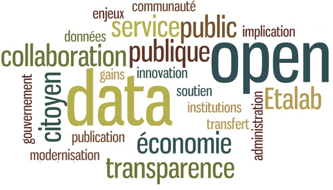
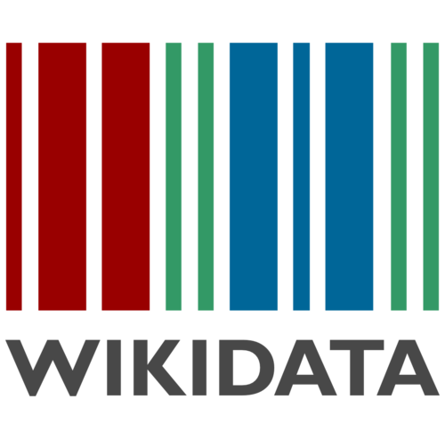

L’opendata
Benoit Simard
Presentation
Benoit Simard
Ancien de l’IMA
Graphe addicte
Libérateur de données
@logisima
Association de 1901
Existe depuis 2009
Action autour de la donnée et de la gouvernance ouverte
L’opendata c’est quoi ?
Definition
Mise à disposition des données de manière à ce qu’elles soient accessibles, exploitables et réutilisables par tous

Une reponse a
La mutation de la société : de l’industrielle vers le numérique
opendata, c’est
Des criteres specifiques
toutes mises à disposition (metadata)
collecté à la sources
mises à disposition rapidement
accessibles sans entrave (inscription)
exploitables par des machines (pas de pdf)
accessibles sans discrémination
dans des formats libre
avec une licence libre
Et des licences
Domaine publique
Open Database License - ODbl
Creative commons
Licence ouverte (licence Française)
etc
Author, share alike (copy-left), 'no derivatives', 'no commercial'
C’est l’opensource de la données
Quelques exemples
Wikipedia

OpenStreetMap
*OSM est un projet qui a pour but de constituer une base de données géographiques libre du monde *
Mapillary
Mapillary est un service logiciel en ligne de partage de photos géolocalisées dont l’objectif est de représenter le monde entier (et pas seulement les rues)
La mapillary car
Les données publiques
C’est quoi
Les données exclues
La legislation
Loi CADA (78) : Droit d’accès et réutilisation des informations publiques, y compris à des fins commerciales.
Loi NOTRe (15): Impose l’ouverture pour les collectivités de plus de 3500 habitants.
Loi Macron (16) : Impose l’ouverture des données des transports (horaires théoriques, arrêts, horaires constatés et tarifs).
Loi Lemaire (16): Elargit l’ouverture aux missions de services publics dont le personnel > 250.
Les organismes
Commission d’Accès aux Documents Administratifs
Garant du droit d’accès aux informations en statuant sur le caractère public d’une information et conseille les acteurs publics.
OPENDATAFRANCE
Association qui fédère les collectivités engagées dans l’ouverture de données. Elle travaille notamment à la mise en place de standards et recommandations.
ETALAB
Mission du gouvernement en charge de l’ouverture des données publiques et de la gouvernance ouverte. A l’origine du site www.data.gouv.fr.
Les initiatives
Le local
Un mouvement mondiale
Les enjeux
3 objectfis
Transparence
Regard citoyens
Regards citoyens vise à promouvoir l’ouverture des données publiques et valoriser les institutions démocratiques françaises en créant des applications web qui se basent sur la réutilisation de données publiques.
Transparence ?
Innovation
D’ici la fin d’année il sera possible de geolocaliser les taxi en opendata
Innovation
Handimap est un service qui calcule les itinéraires adaptés aux personnes à mobilité réduite. Il se base notamment sur la liste des parkings dédiés, hauteur des trottoirs, etc.
Bilan
Dialogue
L’opendata comme nouvelle forme de dialogue avec l’état.
Vers l’egov ?
Le gouvermenemt as a plateform
Merci
Des questions ?